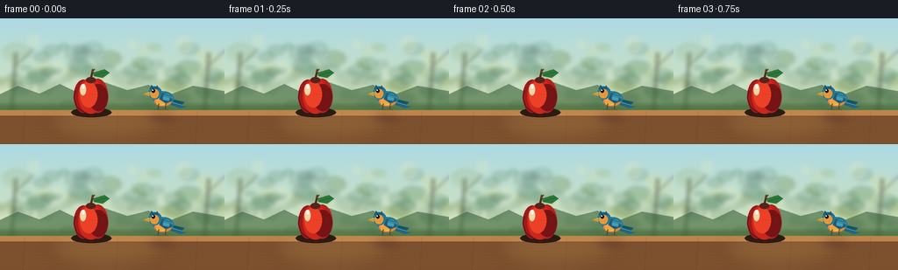
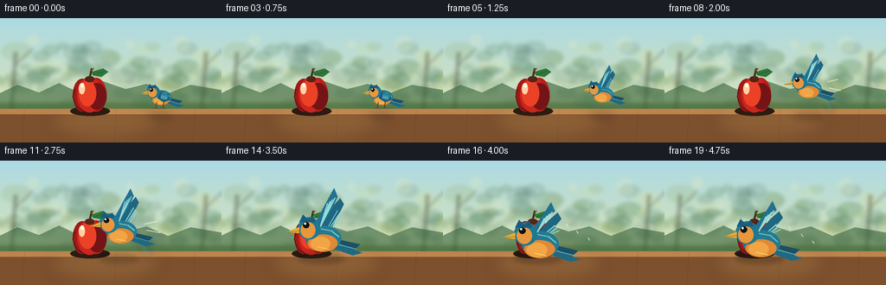

CODING AGENTS AS PIXEL WORLD MODELS
traex/GPT-5.6-Sol · dynamic_spatial_relationship_0040
点击播放 · 原生 RGB 像素
逐轮保存的候选
回放视频、检查图与代码变化。
每份候选均可单独播放。实际图片检查记录在下方工具轨迹中。
候选 01播放与检查图
点击播放 · 原生 RGB 像素


展开代码变化
--- 上一保存版本
+++ 本次保存版本
@@ -0,0 +1,219 @@
+from pathlib import Path
+import math
+import numpy as np
+from PIL import Image, ImageDraw, ImageFilter
+import artifact_io
+
+W,H,N = 256,144,20
+SS=3
+rng=np.random.default_rng(4040)
+
+def sc(v): return int(round(v*SS))
+def pts(seq): return [(sc(x),sc(y)) for x,y in seq]
+
+def ellipse(d, box, fill, outline=None, width=1):
+ d.ellipse(tuple(sc(v) for v in box), fill=fill, outline=outline, width=sc(width) if outline else 1)
+def polygon(d, p, fill): d.polygon(pts(p),fill=fill)
+def line(d,p,fill,width=1): d.line(pts(p),fill=fill,width=max(1,sc(width)),joint='curve')
+
+def gradient_bg():
+ im=np.zeros((H*SS,W*SS,3),dtype=np.uint8)
+ # warm dawn sky into green garden
+ for y in range(H*SS):
+ yy=y/(H*SS-1)
+ if yy < .68:
+ t=yy/.68
+ c=np.array([172,218,228])*(1-t)+np.array([214,226,184])*t
+ else:
+ t=(yy-.68)/.32
+ c=np.array([128,155,94])*(1-t)+np.array([101,119,70])*t
+ im[y,:,]=np.clip(c,0,255)
+ return Image.fromarray(im,'RGB')
+
+BG=gradient_bg()
+bd=ImageDraw.Draw(BG,'RGBA')
+# soft distant orchard foliage (fixed, softly blurred)
+for _ in range(75):
+ x=float(rng.uniform(-8,264)); y=float(rng.uniform(31,103)); r=float(rng.uniform(6,18))
+ palette=[(63,115,74,50),(40,100,73,42),(139,163,82,44),(225,218,122,34),(44,87,68,36)]
+ col=palette[int(rng.integers(0,len(palette)))]
+ ellipse(bd,(x-r,y-r*.62,x+r,y+r*.62),col)
+# distant trunks
+for x in [18,238]:
+ line(bd,[(x,39),(x-5,108)],(67,70,46,95),5)
+ line(bd,[(x,54),(x+20,35)],(67,70,46,65),3)
+# bokeh sun spots
+for x,y,r in [(38,25,7),(210,30,10),(231,60,5),(65,52,4),(150,30,5)]:
+ ellipse(bd,(x-r,y-r,x+r,y+r),(255,244,184,45))
+BG=BG.filter(ImageFilter.GaussianBlur(sc(2.0)))
+# sharpen scenic horizon / table after blur
+bd=ImageDraw.Draw(BG,'RGBA')
+# low hedge
+polygon(bd,[(-5,89),(20,77),(45,86),(68,75),(93,87),(119,73),(145,82),(169,76),(194,87),(220,77),(261,84),(261,113),(-5,113)],(58,102,61,160))
+# table top perspective
+polygon(bd,[(-12,105),(267,105),(267,148),(-12,148)],(126,81,46,255))
+polygon(bd,[(-12,105),(267,105),(267,111),(-12,111)],(190,132,77,255))
+# wooden grain
+for k in range(11):
+ y=112+k*3.4
+ line(bd,[(-5,y),(55,y+1),(115,y-.5),(180,y+1),(260,y)],(73,43,29,35),.7)
+for x in [28,134,225]:
+ line(bd,[(x,106),(x-2,144)],(66,39,28,30),1)
+# warm pool of light on table
+light=Image.new('RGBA',BG.size,(0,0,0,0)); ld=ImageDraw.Draw(light,'RGBA')
+ellipse(ld,(53,96,190,142),(255,207,111,30)); light=light.filter(ImageFilter.GaussianBlur(sc(10)))
+BG=Image.alpha_composite(BG.convert('RGBA'),light)
+
+# fixed apple, at x=104. Drawn before bird.
+def draw_apple(im):
+ d=ImageDraw.Draw(im,'RGBA')
+ # contact shadow
+ ellipse(d,(81,102,127,113),(45,27,18,75))
+ # fruit shape from overlapping lobes
+ ellipse(d,(84,70,106,108),(159,26,24,255))
+ ellipse(d,(99,69,123,108),(186,32,26,255))
+ ellipse(d,(89,68,118,109),(201,39,30,255))
+ # deep bottom and right contour
+ ellipse(d,(101,75,123,106),(117,20,22,80))
+ # warm center bloom
+ ellipse(d,(91,72,111,102),(235,65,39,100))
+ # glossy highlights
+ ellipse(d,(91,75,98,88),(255,210,165,150))
+ ellipse(d,(93,75,97,80),(255,250,225,210))
+ # top dimple and stem
+ ellipse(d,(98,67,109,74),(87,35,23,130))
+ line(d,[(103,71),(106,58)],(70,46,29,255),2.2)
+ line(d,[(105,61),(108,58)],(107,71,38,255),1)
+ # leaf
+ polygon(d,[(106,62),(119,58),(125,62),(117,68),(107,66)],(48,117,57,255))
+ line(d,[(108,65),(121,61)],(28,80,40,200),.8)
+ # subtle rim
+ line(d,[(86,82),(84,91),(88,102),(97,108)],(92,18,22,130),1)
+
+# affine transform local bird point; bird faces left
+def bird_point(cx,cy,s,x,y): return (cx+x*s,cy+y*s)
+def bpoly(d,cx,cy,s,p,fill): polygon(d,[bird_point(cx,cy,s,x,y) for x,y in p],fill)
+def bellipse(d,cx,cy,s,b,fill,outline=None,width=1):
+ x0,y0,x1,y1=b
+ ellipse(d,(cx+x0*s,cy+y0*s,cx+x1*s,cy+y1*s),fill,outline,width)
+def bline(d,cx,cy,s,p,fill,width=1): line(d,[bird_point(cx,cy,s,x,y) for x,y in p],fill,width*s)
+
+def draw_bird(im,cx,cy,s,wing_phase,perched=False,alpha=255):
+ d=ImageDraw.Draw(im,'RGBA')
+ A=lambda c: tuple(c[:3])+(int(c[3]*alpha/255),)
+ # tail behind body
+ bpoly(d,cx,cy,s,[(9,3),(31,8),(26,13),(7,10)],A((27,80,103,255)))
+ bpoly(d,cx,cy,s,[(11,6),(33,15),(25,17),(6,10)],A((33,105,129,245)))
+ bline(d,cx,cy,s,[(13,8),(28,12)],A((127,205,204,130)),.65)
+ # far wing first. flap parameter -1..1: positive raises wings
+ if not perched:
+ lift=wing_phase
+ if lift >= 0:
+ # raised, broad wing above body
+ tipy=-16-10*lift
+ far=[(3,3),(8,-5),(18,tipy),(15,tipy-5),(8,-15-8*lift),(0,-6),(-4,2)]
+ bpoly(d,cx,cy,s,far,A((31,102,129,235)))
+ for j in range(3):
+ bline(d,cx,cy,s,[(4+j*2,-4),(13+j*1.7,tipy+5+j*2)],A((136,211,210,120)),.8)
+ else:
+ # downstroke wing, visible below
+ drop=-lift
+ far=[(-1,2),(8,3),(19,17+11*drop),(13,19+13*drop),(5,13),(0,8)]
+ bpoly(d,cx,cy,s,far,A((26,93,119,240)))
+ for j in range(3):
+ bline(d,cx,cy,s,[(4,7),(13+j*2,18+8*drop+j*2)],A((125,198,201,125)),.75)
+ # body, teal back then golden belly
+ bellipse(d,cx,cy,s,(-13,-7,16,13),A((37,122,145,255)))
+ bellipse(d,cx,cy,s,(-11,0,13,14),A((224,137,54,255)))
+ bellipse(d,cx,cy,s,(-9,2,7,13),A((241,165,69,220)))
+ # body contour and feather glints
+ bline(d,cx,cy,s,[(-3,-5),(8,-3),(14,2)],A((112,204,202,170)),1)
+ bline(d,cx,cy,s,[(-3,10),(6,12)],A((255,205,105,130)),.8)
+ # near wing
+ if perched:
+ bpoly(d,cx,cy,s,[(-1,-5),(12,-1),(13,7),(5,10),(-4,4)],A((27,91,124,255)))
+ bpoly(d,cx,cy,s,[(2,-3),(12,0),(9,7),(1,5)],A((49,137,157,230)))
+ for q in range(3): bline(d,cx,cy,s,[(1,1+q*1.5),(9,3+q*1.2)],A((135,204,202,120)),.6)
+ else:
+ lift=wing_phase
+ if lift>=0:
+ tipy=-22-10*lift
+ wing=[(-3,1),(0,-7),(7,-18),(13,tipy),(10,tipy-7),(3,-18-8*lift),(-7,-6),(-9,1)]
+ bpoly(d,cx,cy,s,wing,A((35,113,144,255)))
+ # primary feather fingers
+ for j in range(4):
+ bline(d,cx,cy,s,[(-1,-6),(5+j*2,tipy+5-j*1.5)],A((151,219,214,150)),.85)
+ else:
+ drop=-lift
+ wing=[(-4,-2),(3,0),(15,12+12*drop),(14,20+13*drop),(9,18+12*drop),(2,10),(-6,5)]
+ bpoly(d,cx,cy,s,wing,A((32,106,138,255)))
+ for j in range(4):
+ bline(d,cx,cy,s,[(1,5),(10+j*1.8,16+9*drop+j*2)],A((151,219,214,145)),.8)
+ # head in front of body
+ bellipse(d,cx,cy,s,(-19,-14,-1,4),A((31,119,146,255)))
+ bellipse(d,cx,cy,s,(-17,-10,-5,3),A((232,151,61,235)))
+ # crown
+ bpoly(d,cx,cy,s,[(-18,-10),(-15,-16),(-11,-12),(-7,-15),(-5,-10)],A((25,93,126,255)))
+ # beak
+ bpoly(d,cx,cy,s,[(-18,-6),(-28,-2),(-18,-1)],A((230,173,55,255)))
+ bline(d,cx,cy,s,[(-27,-2),(-18,-3)],A((96,66,30,220)),.55)
+ # eye and catchlight
+ bellipse(d,cx,cy,s,(-15,-10,-10,-5),A((15,20,21,255)))
+ bellipse(d,cx,cy,s,(-14.2,-9.5,-12.5,-7.8),A((255,255,239,245)))
+ # feet only while perched/near table
+ if perched:
+ for ox in [-5,5]:
+ bline(d,cx,cy,s,[(ox,10),(ox-1,18)],A((95,58,35,255)),1.1)
+ bline(d,cx,cy,s,[(ox-1,18),(ox-5,19)],A((95,58,35,255)),.7)
+ bline(d,cx,cy,s,[(ox-1,18),(ox+3,19)],A((95,58,35,255)),.7)
+
+def smooth(t): return t*t*(3-2*t)
+
+frames=[]
+for i in range(N):
+ im=BG.copy()
+ draw_apple(im)
+ # animated contact/flight shadow: moving left and growing as bird approaches viewer
+ d=ImageDraw.Draw(im,'RGBA')
+ if i<=4:
+ t=0; cx,cy,s=185,89,.82; perched=True
+ shx,shw=185,28
+ else:
+ u=min(1,(i-4)/12); t=smooth(u)
+ cx=185+(110-185)*t
+ cy=89 - 13*math.sin(math.pi*u) + 3*t + (1.2*math.sin((i-16)*1.7) if i>=16 else 0)
+ s=.82+(.66)*t
+ perched=False
+ shx=185+(110-185)*t; shw=28+28*t
+ # cast shadow onto tabletop (bird's growing shadow is a depth cue)
+ shadow=Image.new('RGBA',im.size,(0,0,0,0)); sd=ImageDraw.Draw(shadow,'RGBA')
+ ellipse(sd,(shx-shw/2,111-shw*.08,shx+shw/2,115+shw*.08),(39,27,20,int(40+30*t)))
+ shadow=shadow.filter(ImageFilter.GaussianBlur(sc(2.5+1.5*(1-t))))
+ im=Image.alpha_composite(im,shadow)
+ # motion echo during fastest part, subtle and always behind current bird
+ if 6<=i<=13:
+ echo=Image.new('RGBA',im.size,(0,0,0,0))
+ u0=max(0,(i-5.2)/12); te=smooth(u0)
+ ex=185+(110-185)*te; ey=89-13*math.sin(math.pi*u0)+3*te
+ draw_bird(echo,ex+5,ey,s*.95,math.sin(i*2.2),False,40)
+ echo=echo.filter(ImageFilter.GaussianBlur(sc(2.2)))
+ im=Image.alpha_composite(im,echo)
+ # pale curved speed marks behind
+ md=ImageDraw.Draw(im,'RGBA')
+ line(md,[(cx+23*s,cy-5),(cx+35*s,cy-8)],(238,244,215,85),1)
+ line(md,[(cx+25*s,cy+2),(cx+38*s,cy+5)],(238,244,215,65),1)
+ # wing action; resting initial establishes right-of relation clearly
+ wing=0 if perched else math.sin((i-4)*2.1)
+ draw_bird(im,cx,cy,s,wing,perched)
+ # foreground final frames: tiny floating feather motes emphasize depth
+ if i>=16:
+ fd=ImageDraw.Draw(im,'RGBA')
+ for k in range(3):
+ fx=143+k*13+math.sin(i+k)*2; fy=73+k*8+(i-16)*1.2
+ line(fd,[(fx,fy),(fx+2,fy+3)],(232,240,217,100),.7)
+ out=im.convert('RGB').resize((W,H),Image.Resampling.LANCZOS)
+ frames.append(np.asarray(out,dtype=np.uint8))
+
+frames=np.stack(frames)
+artifact_io.save(frames,Path(__file__).parent)
+print(frames.shape,frames.dtype,frames.min(),frames.max())
可观测工具轨迹
实际执行的命令与返回图片。
命令 1exit 0
/bin/bash -lc "cat prompt.txt && printf '\\n---RULES---\\n' && cat GENERATION_RULES.md && printf '\\n---SPEC---\\n' && cat task_spec.json"
命令 2exit 0
/bin/bash -lc "find . -maxdepth 2 -type f -printf '%p\\n' | sort"
命令 3exit 0
/bin/bash -lc 'cat artifact_io.py'
命令 4exit 0
/bin/bash -lc "cat > generate.py <<'PY'
from pathlib import Path
import math
import numpy as np
from PIL import Image, ImageDraw, ImageFilter
import artifact_io
W,H,N = 256,144,20
SS=3
rng=np.random.default_rng(4040)
def sc(v): return int(round(v*SS))
def pts(seq): return [(sc(x),sc(y)) for x,y in seq]
def ellipse(d, box, fill, outline=None, width=1):
d.ellipse(tuple(sc(v) for v in box), fill=fill, outline=outline, width=sc(width) if outline else 1)
def polygon(d, p, fill): d.polygon(pts(p),fill=fill)
def line(d,p,fill,width=1): d.line(pts(p),fill=fill,width=max(1,sc(width)),joint='curve')
def gradient_bg():
im=np.zeros((H*SS,W*SS,3),dtype=np.uint8)
# warm dawn sky into green garden
for y in range(H*SS):
yy=y/(H*SS-1)
if yy < .68:
t=yy/.68
c=np.array([172,218,228])*(1-t)+np.array([214,226,184])*t
else:
t=(yy-.68)/.32
c=np.array([128,155,94])*(1-t)+np.array([101,119,70])*t
im[y,:,]=np.clip(c,0,255)
return Image.fromarray(im,'RGB')
BG=gradient_bg()
bd=ImageDraw.Draw(BG,'RGBA')
# soft distant orchard foliage (fixed, softly blurred)
for _ in range(75):
x=float(rng.uniform(-8,264)); y=float(rng.uniform(31,103)); r=float(rng.uniform(6,18))
palette=[(63,115,74,50),(40,100,73,42),(139,163,82,44),(225,218,122,34),(44,87,68,36)]
col=palette[int(rng.integers(0,len(palette)))]
ellipse(bd,(x-r,y-r*.62,x+r,y+r*.62),col)
# distant trunks
for x in [18,238]:
line(bd,[(x,39),(x-5,108)],(67,70,46,95),5)
line(bd,[(x,54),(x+20,35)],(67,70,46,65),3)
# bokeh sun spots
for x,y,r in [(38,25,7),(210,30,10),(231,60,5),(65,52,4),(150,30,5)]:
ellipse(bd,(x-r,y-r,x+r,y+r),(255,244,184,45))
BG=BG.filter(ImageFilter.GaussianBlur(sc(2.0)))
# sharpen scenic horizon / table after blur
bd=ImageDraw.Draw(BG,'RGBA')
# low hedge
polygon(bd,[(-5,89),(20,77),(45,86),(68,75),(93,87),(119,73),(145,82),(169,76),(194,87),(220,77),(261,84),(261,113),(-5,113)],(58,102,61,160))
# table top perspective
polygon(bd,[(-12,105),(267,105),(267,148),(-12,148)],(126,81,46,255))
polygon(bd,[(-12,105),(267,105),(267,111),(-12,111)],(190,132,77,255))
# wooden grain
for k in range(11):
y=112+k*3.4
line(bd,[(-5,y),(55,y+1),(115,y-.5),(180,y+1),(260,y)],(73,43,29,35),.7)
for x in [28,134,225]:
line(bd,[(x,106),(x-2,144)],(66,39,28,30),1)
# warm pool of light on table
light=Image.new('RGBA',BG.size,(0,0,0,0)); ld=ImageDraw.Draw(light,'RGBA')
ellipse(ld,(53,96,190,142),(255,207,111,30)); light=light.filter(ImageFilter.GaussianBlur(sc(10)))
BG=Image.alpha_composite(BG.convert('RGBA'),light)
# fixed apple, at x=104. Drawn before bird.
def draw_apple(im):
d=ImageDraw.Draw(im,'RGBA')
# contact shadow
ellipse(d,(81,102,127,113),(45,27,18,75))
# fruit shape from overlapping lobes
ellipse(d,(84,70,106,108),(159,26,24,255))
ellipse(d,(99,69,123,108),(186,32,26,255))
ellipse(d,(89,68,118,109),(201,39,30,255))
# deep bottom and right contour
ellipse(d,(101,75,123,106),(117,20,22,80))
# warm center bloom
ellipse(d,(91,72,111,102),(235,65,39,100))
# glossy highlights
ellipse(d,(91,75,98,88),(255,210,165,150))
ellipse(d,(93,75,97,80),(255,250,225,210))
# top dimple and stem
ellipse(d,(98,67,109,74),(87,35,23,130))
line(d,[(103,71),(106,58)],(70,46,29,255),2.2)
line(d,[(105,61),(108,58)],(107,71,38,255),1)
# leaf
polygon(d,[(106,62),(119,58),(125,62),(117,68),(107,66)],(48,117,57,255))
line(d,[(108,65),(121,61)],(28,80,40,200),.8)
# subtle rim
line(d,[(86,82),(84,91),(88,102),(97,108)],(92,18,22,130),1)
# affine transform local bird point; bird faces left
def bird_point(cx,cy,s,x,y): return (cx+x*s,cy+y*s)
def bpoly(d,cx,cy,s,p,fill): polygon(d,[bird_point(cx,cy,s,x,y) for x,y in p],fill)
def bellipse(d,cx,cy,s,b,fill,outline=None,width=1):
x0,y0,x1,y1=b
ellipse(d,(cx+x0*s,cy+y0*s,cx+x1*s,cy+y1*s),fill,outline,width)
def bline(d,cx,cy,s,p,fill,width=1): line(d,[bird_point(cx,cy,s,x,y) for x,y in p],fill,width*s)
def draw_bird(im,cx,cy,s,wing_phase,perched=False,alpha=255):
d=ImageDraw.Draw(im,'RGBA')
A=lambda c: tuple(c[:3])+(int(c[3]*alpha/255),)
# tail behind body
bpoly(d,cx,cy,s,[(9,3),(31,8),(26,13),(7,10)],A((27,80,103,255)))
bpoly(d,cx,cy,s,[(11,6),(33,15),(25,17),(6,10)],A((33,105,129,245)))
bline(d,cx,cy,s,[(13,8),(28,12)],A((127,205,204,130)),.65)
# far wing first. flap parameter -1..1: positive raises wings
if not perched:
lift=wing_phase
if lift >= 0:
# raised, broad wing above body
tipy=-16-10*lift
far=[(3,3),(8,-5),(18,tipy),(15,tipy-5),(8,-15-8*lift),(0,-6),(-4,2)]
bpoly(d,cx,cy,s,far,A((31,102,129,235)))
for j in range(3):
bline(d,cx,cy,s,[(4+j*2,-4),(13+j*1.7,tipy+5+j*2)],A((136,211,210,120)),.8)
else:
# downstroke wing, visible below
drop=-lift
far=[(-1,2),(8,3),(19,17+11*drop),(13,19+13*drop),(5,13),(0,8)]
bpoly(d,cx,cy,s,far,A((26,93,119,240)))
for j in range(3):
bline(d,cx,cy,s,[(4,7),(13+j*2,18+8*drop+j*2)],A((125,198,201,125)),.75)
# body, teal back then golden belly
bellipse(d,cx,cy,s,(-13,-7,16,13),A((37,122,145,255)))
bellipse(d,cx,cy,s,(-11,0,13,14),A((224,137,54,255)))
bellipse(d,cx,cy,s,(-9,2,7,13),A((241,165,69,220)))
# body contour and feather glints
bline(d,cx,cy,s,[(-3,-5),(8,-3),(14,2)],A((112,204,202,170)),1)
bline(d,cx,cy,s,[(-3,10),(6,12)],A((255,205,105,130)),.8)
# near wing
if perched:
bpoly(d,cx,cy,s,[(-1,-5),(12,-1),(13,7),(5,10),(-4,4)],A((27,91,124,255)))
bpoly(d,cx,cy,s,[(2,-3),(12,0),(9,7),(1,5)],A((49,137,157,230)))
for q in range(3): bline(d,cx,cy,s,[(1,1+q*1.5),(9,3+q*1.2)],A((135,204,202,120)),.6)
else:
lift=wing_phase
if lift>=0:
tipy=-22-10*lift
wing=[(-3,1),(0,-7),(7,-18),(13,tipy),(10,tipy-7),(3,-18-8*lift),(-7,-6),(-9,1)]
bpoly(d,cx,cy,s,wing,A((35,113,144,255)))
# primary feather fingers
for j in range(4):
bline(d,cx,cy,s,[(-1,-6),(5+j*2,tipy+5-j*1.5)],A((151,219,214,150)),.85)
else:
drop=-lift
wing=[(-4,-2),(3,0),(15,12+12*drop),(14,20+13*drop),(9,18+12*drop),(2,10),(-6,5)]
bpoly(d,cx,cy,s,wing,A((32,106,138,255)))
for j in range(4):
bline(d,cx,cy,s,[(1,5),(10+j*1.8,16+9*drop+j*2)],A((151,219,214,145)),.8)
# head in front of body
bellipse(d,cx,cy,s,(-19,-14,-1,4),A((31,119,146,255)))
bellipse(d,cx,cy,s,(-17,-10,-5,3),A((232,151,61,235)))
# crown
bpoly(d,cx,cy,s,[(-18,-10),(-15,-16),(-11,-12),(-7,-15),(-5,-10)],A((25,93,126,255)))
# beak
bpoly(d,cx,cy,s,[(-18,-6),(-28,-2),(-18,-1)],A((230,173,55,255)))
bline(d,cx,cy,s,[(-27,-2),(-18,-3)],A((96,66,30,220)),.55)
# eye and catchlight
bellipse(d,cx,cy,s,(-15,-10,-10,-5),A((15,20,21,255)))
bellipse(d,cx,cy,s,(-14.2,-9.5,-12.5,-7.8),A((255,255,239,245)))
# feet only while perched/near table
if perched:
for ox in [-5,5]:
bline(d,cx,cy,s,[(ox,10),(ox-1,18)],A((95,58,35,255)),1.1)
bline(d,cx,cy,s,[(ox-1,18),(ox-5,19)],A((95,58,35,255)),.7)
bline(d,cx,cy,s,[(ox-1,18),(ox+3,19)],A((95,58,35,255)),.7)
def smooth(t): return t*t*(3-2*t)
frames=[]
for i in range(N):
im=BG.copy()
draw_apple(im)
# animated contact/flight shadow: moving left and growing as bird approaches viewer
d=ImageDraw.Draw(im,'RGBA')
if i<=4:
t=0; cx,cy,s=185,89,.82; perched=True
shx,shw=185,28
else:
u=min(1,(i-4)/12); t=smooth(u)
cx=185+(110-185)*t
cy=89 - 13*math.sin(math.pi*u) + 3*t + (1.2*math.sin((i-16)*1.7) if i>=16 else 0)
s=.82+(.66)*t
perched=False
shx=185+(110-185)*t; shw=28+28*t
# cast shadow onto tabletop (bird's growing shadow is a depth cue)
shadow=Image.new('RGBA',im.size,(0,0,0,0)); sd=ImageDraw.Draw(shadow,'RGBA')
ellipse(sd,(shx-shw/2,111-shw*.08,shx+shw/2,115+shw*.08),(39,27,20,int(40+30*t)))
shadow=shadow.filter(ImageFilter.GaussianBlur(sc(2.5+1.5*(1-t))))
im=Image.alpha_composite(im,shadow)
# motion echo during fastest part, subtle and always behind current bird
if 6<=i<=13:
echo=Image.new('RGBA',im.size,(0,0,0,0))
u0=max(0,(i-5.2)/12); te=smooth(u0)
ex=185+(110-185)*te; ey=89-13*math.sin(math.pi*u0)+3*te
draw_bird(echo,ex+5,ey,s*.95,math.sin(i*2.2),False,40)
echo=echo.filter(ImageFilter.GaussianBlur(sc(2.2)))
im=Image.alpha_composite(im,echo)
# pale curved speed marks behind
md=ImageDraw.Draw(im,'RGBA')
line(md,[(cx+23*s,cy-5),(cx+35*s,cy-8)],(238,244,215,85),1)
line(md,[(cx+25*s,cy+2),(cx+38*s,cy+5)],(238,244,215,65),1)
# wing action; resting initial establishes right-of relation clearly
wing=0 if perched else math.sin((i-4)*2.1)
draw_bird(im,cx,cy,s,wing,perched)
# foreground final frames: tiny floating feather motes emphasize depth
if i>=16:
fd=ImageDraw.Draw(im,'RGBA')
for k in range(3):
fx=143+k*13+math.sin(i+k)*2; fy=73+k*8+(i-16)*1.2
line(fd,[(fx,fy),(fx+2,fy+3)],(232,240,217,100),.7)
out=im.convert('RGB').resize((W,H),Image.Resampling.LANCZOS)
frames.append(np.asarray(out,dtype=np.uint8))
frames=np.stack(frames)
artifact_io.save(frames,Path(__file__).parent)
print(frames.shape,frames.dtype,frames.min(),frames.max())
PY
python generate.py"视觉工具实际返回图片 1

保存候选 1 份；完成命令 4 次；可验证图片返回 1 张。原始 API 响应与完整日志保留在本地。